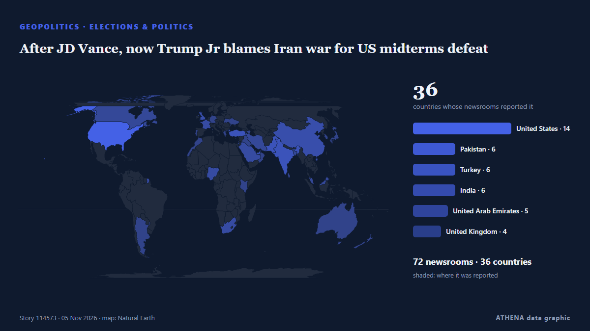

After JD Vance, now Trump Jr blames Iran war for US midterms defeat

Says war in Iran had weighed on Republican candidates, even as voters backed his handling of it. von Express Tribune
Unabhängig gemeldet von 80 Medien in 39 Ländern seit dem 3. Nov., zuerst von Foreign Policy; die Berichterstattung ist auf dem Höhepunkt. ATHENA stuft das Risiko als hoch ein (7.9/10), vor allem wegen der Schwere des beschriebenen Schadens und seiner geografischen und sektoralen Reichweite. Die Konfidenz liegt bei 91 % (hoch): 80 Medien bestätigen es unabhängig, bei einer mittleren Verlässlichkeit der Quellen von 75 %. Medien nach Land: Vereinigte Staaten (6), Türkei (4), Pakistan (3). Berichterstattung: 3. Nov. bis 4. Nov., 22 Stunden.
Warum es wichtig ist: Sicherheits- und diplomatische Entwicklungen können Bündnisse, Handel und Märkte weit über die direkt beteiligten Länder hinaus verschieben.
Was sich geändert hat: 94 neue Berichte von 69 Redaktionen in den 24 Stunden bis 5. Nov..
Erste Schlagzeile: China Won’t Bail Out Trump’s Lost War
Schlagzeilen werden auf Englisch angezeigt, wie veröffentlicht.
Auf einen Blick
Ausgewählt, bewertet und geschrieben nach der veröffentlichten Methodik von ATHENA. Kein Redakteur greift in einzelne Ereignisse ein. So entsteht ATHENA ›
| 03 Nov 18:04 UTC | 1 |
|---|---|
| 03 Nov 20:04 UTC | 0 |
| 03 Nov 22:04 UTC | 0 |
| 04 Nov 00:04 UTC | 0 |
| 04 Nov 02:04 UTC | 1 |
| 04 Nov 04:04 UTC | 5 |
| 04 Nov 06:04 UTC | 8 |
| 04 Nov 08:04 UTC | 6 |
| 04 Nov 10:04 UTC | 2 |
| 04 Nov 12:04 UTC | 6 |
| 04 Nov 14:04 UTC | 4 |
| 04 Nov 16:04 UTC | 35 |
| 04 Nov 18:04 UTC | 19 |
| 04 Nov 20:04 UTC | 8 |
| 04 Nov 22:04 UTC | 6 |
| 05 Nov 00:04 UTC | 0 |
| 05 Nov 02:04 UTC | 3 |
| 05 Nov 04:04 UTC | 2 |
| 05 Nov 06:04 UTC | 7 |
| 05 Nov 08:04 UTC | 1 |
| 05 Nov 10:04 UTC | 1 |
| 03 Nov 20:23 UTC | 4.6 |
|---|---|
| 04 Nov 16:54 UTC | 7.8 |
| 04 Nov 21:16 UTC | 7.4 |
| 05 Nov 01:43 UTC | 8.0 |
| 05 Nov 08:14 UTC | 7.2 |
| 05 Nov 08:30 UTC | 7.8 |
| 05 Nov 10:04 UTC | 7.9 |
Warum diese Zahlen
Bedeutung
Risiko
Konfidenz
Die Berichterstattung – wer berichtete, und wann
Schlagzeile wie veröffentlicht · öffnet das Original- Foreign Policy · Vereinigte StaatenChina Won’t Bail Out Trump’s Lost War
- Express Tribune · PakistanTrump acknowledges role of Iran war in Democratic sweep in midterm elections
- To Vima (English) · GriechenlandTrump Acknowledges Iran War Is Partly to Blame for Republican Losses
- Gulf News · Vereinigte Arabische EmirateTrump acknowledges Iran war played role in US midterms defeat
- PBS NewsHour · Vereinigte StaatenTrump says Democrats 'did a good job,' blames Republican candidates for midterm losses
- Oman Observer · OmanTrump acknowledges role of Iran war in Democratic sweep
- Business Recorder · PakistanTrump acknowledges Iran role in Democratic sweep
- Türkiye Today · Türkei'Iran was a piece of it': Trump admits war hurt Republicans
- Middle East Eye · INTTrump acknowledges Iran played role in Republican midterm losses
- Arab Times · KuwaitTrump Says He Does Not Regret Iran War as Allies Blame Conflict for Republican Midterm Losses – WSJ
- Vanguard · NigeriaTrump says Iran war played role in US midterms defeat
- IOL · SüdafrikaTrump congratulates Democrats on midterms, says Iran war played role
- TRT World · TürkeiTrump links Republican midterm losses to Iran war and higher fuel prices
- Daily Trust · NigeriaTrump blames Iran as Democrats sweep midterm elections
- Iran International (English) · IranTrump says Iran war decision serves long-term US interests despite election setbacks
- News of Bahrain · BahrainTrump Admits Iran War Contributed to Republican Midterm Defeat
- The Independent · Vereinigtes KönigreichIran leads global reactions to Trump’s midterms disaster: ‘Americans are saying no to war’
- CBS News (World) · Vereinigte StaatenOil prices rebound slightly as Iran claims new attacks on ships
- Africanews (English) · AFRDemocrats seize Congress as Trump refuses to take blame
- France 24 English · FrankreichWhy the Democrats routed the Republicans in the US midterm elections
- Cyprus Mail · ZypernTrump acknowledges role of Iran war in Democratic sweep in midterm elections
- France 24 English · FrankreichMidterms: Trump acknowledges role of Iran war, congratulates Dems
- Middle East Eye · INT'I think a part of it was Iran': Trump acknowledges war's impact on midterm election losses
- Al Jazeera English · KatarTrump admits Iran war hurt Republican vote, vows to veto ‘insane’ bills
- DW English · DeutschlandUS midterms: 'Largely true' Iran war led to loss, Trump says
- The New Arab · INTTrump admits Iran war played role in Republican midterm defeat
- The Hill · Vereinigte StaatenTrump: Iran war partially to blame for GOP midterm losses
- TRT World · TürkeiIran claims 'twilight of Trumpism' after US midterm defeat
- Express Tribune · PakistanUS Vice President Vance says Iran war is ‘the reason we lost’ midterms
- Buenos Aires Herald · ArgentinienTrump admits Iran war hurt Republicans in US midterms
- France 24 English · FrankreichHow Trump's broken promises on war, inflation handed Democrats the midterms
- Al Jazeera English · KatarTrump says Iran war justified despite polls drubbing
- Haaretz (English) · IsraelVance: Republicans lost midterms because of Iran war, U.S.-Israel relations
- Middle East Eye · INTVance blames Iran war for Republican midterm defeat
- Arab News · Saudi-ArabienTrump says ‘largely true’ Iran war caused midterms loss, after Vance comments
- Forbes Business · Vereinigte StaatenVance Blames Republican Midterm Losses On Iran War: ‘Everyone Knows Why We Lost’
- The Hill · Vereinigte StaatenVance breaks silence on midterms: 'The reason we lost is the war'
- Asharq Al-Awsat (English) · Saudi-ArabienUS VP Vance Says Iran War Is ‘the Reason We Lost’ Midterms
- Anadolu Agency (English) · TürkeiVance says Iran war was 'the reason' Republicans lost US midterm elections
- Gulf News · Vereinigte Arabische EmirateUS VP Vance says Iran war is the 'real reason we lost' midterms